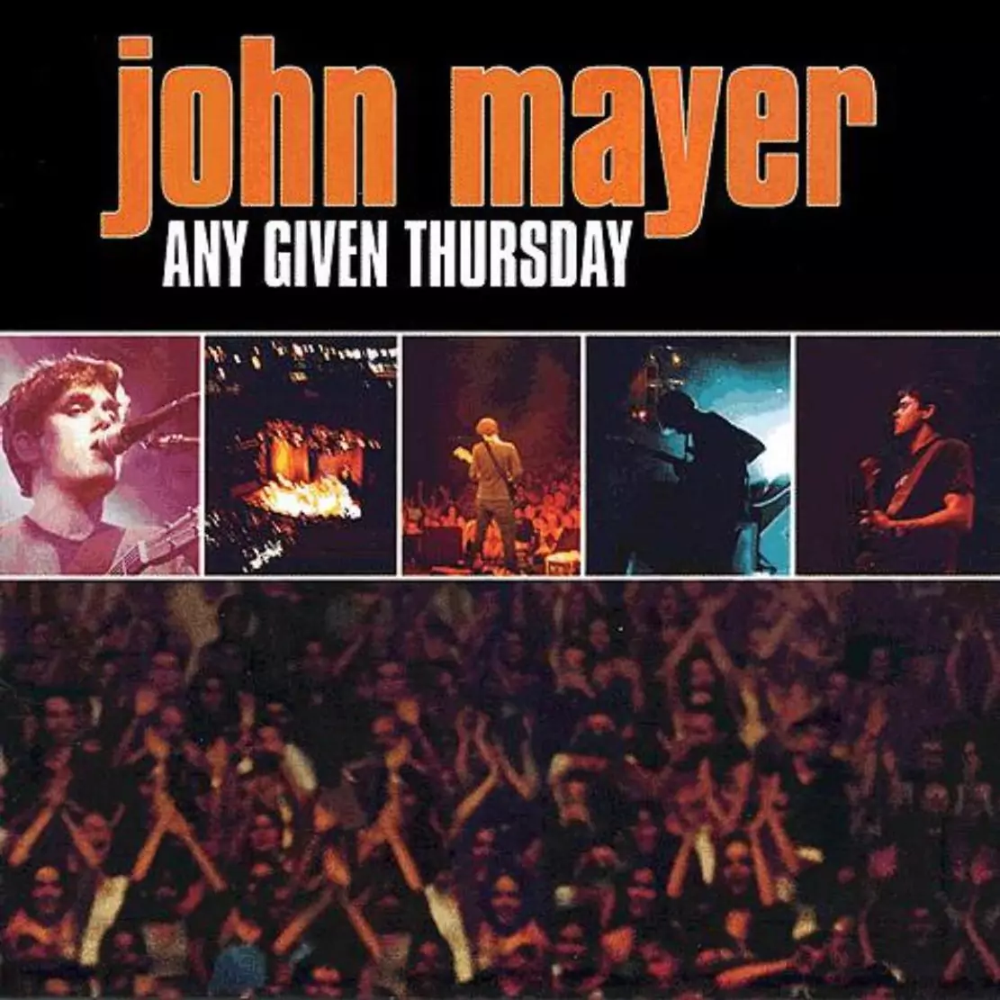

Home
Videos
Audio
Tabs

Any Given Thursday
John Mayer - 2003
<-- Back
3x5
No Such Thing
Back to You
City Love
Something's Missing
Man on the Side
Message in a Bottle
Love song for No One
Why Georgia
Your Body is a Wonderland
My Stupid Mouth
Covered in Rain
83
Comfortable ----- (This is the only filled out tab sheet.)
Neon